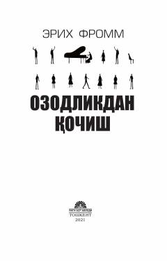

OQInsonning ozodlikka bo'lgan munosabati va undan qochish sabablari haqida psixologik tadqiqot.
Erix Frommning ushbu mashhur asari inson erkinligi, uning mohiyati va zamonaviy jamiyatda inson nima uchun ozodlikdan qochishga moyilligi haqida chuqur falsafiy-psixologik tahlilni taqdim etadi. Muallif insonning yolg'izlik va kuchsizlikdan qutulish uchun o'z shaxsiyatidan voz kechishi hamda avtoritar tuzumlarga bo'ysunishi sabablarini tadqiq qiladi.